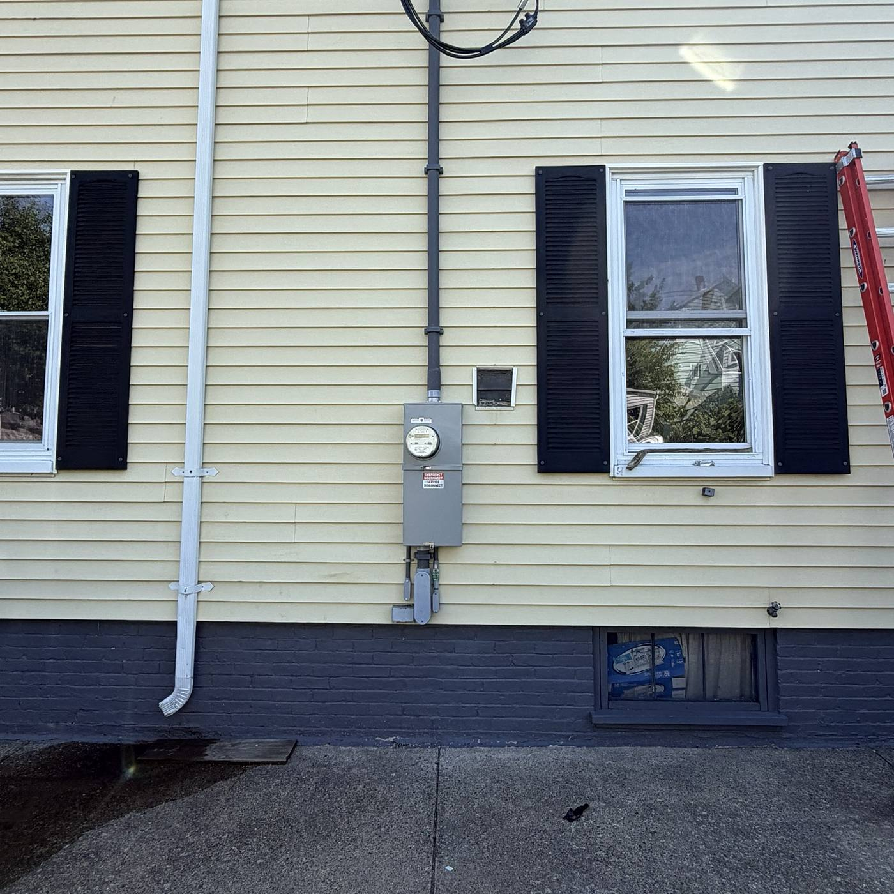
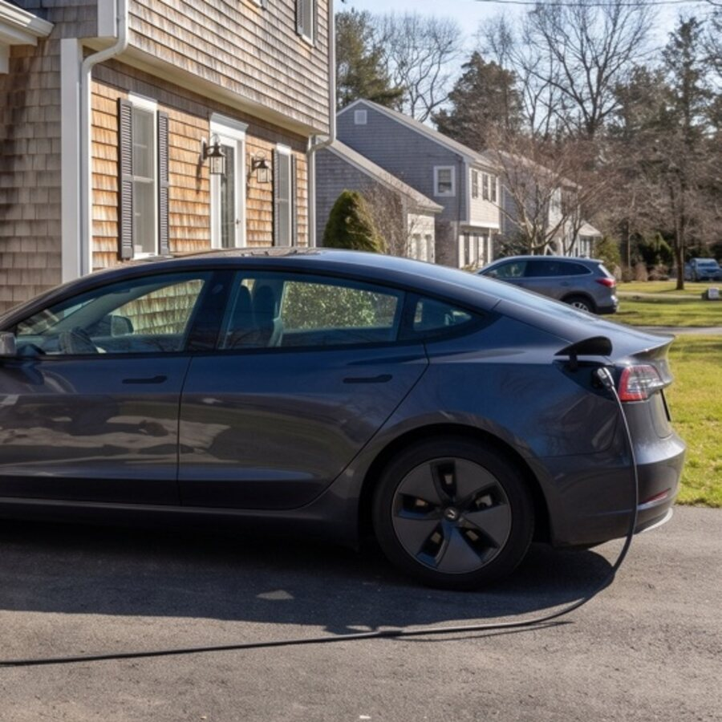
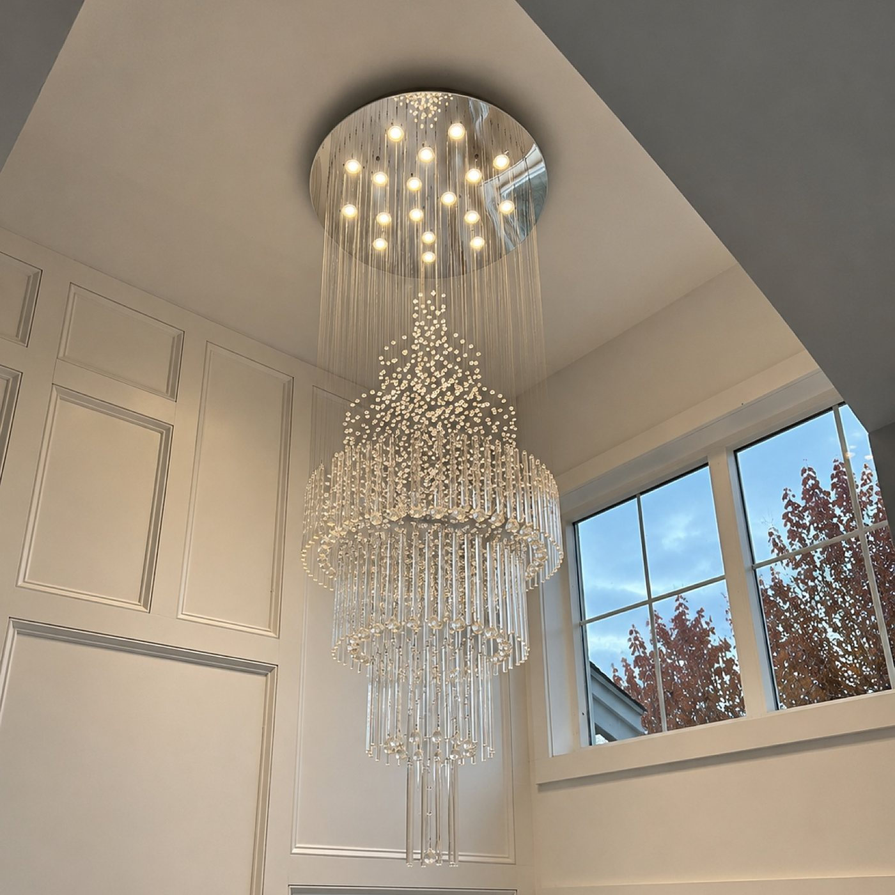
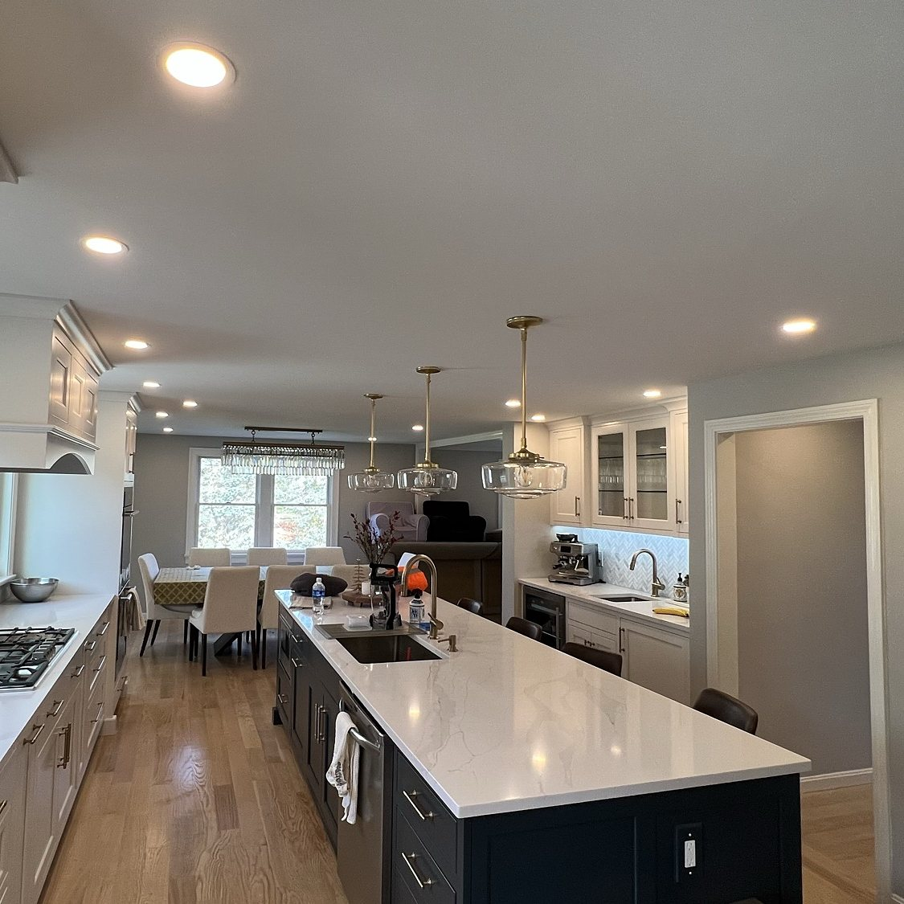
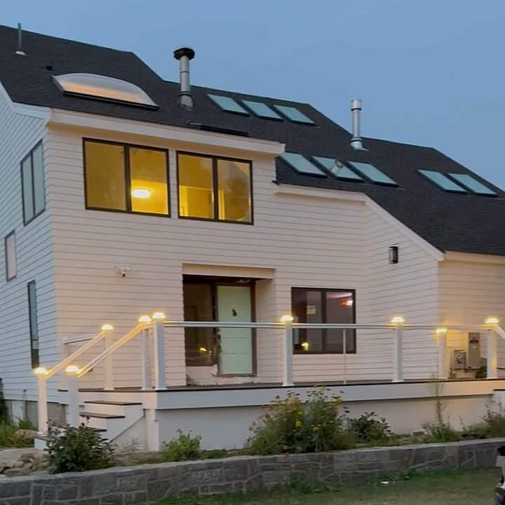
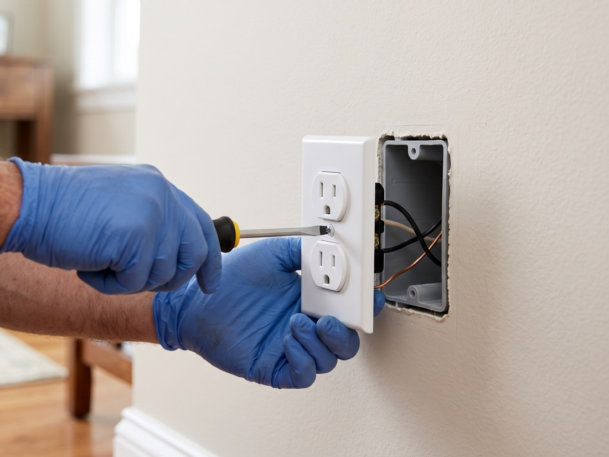
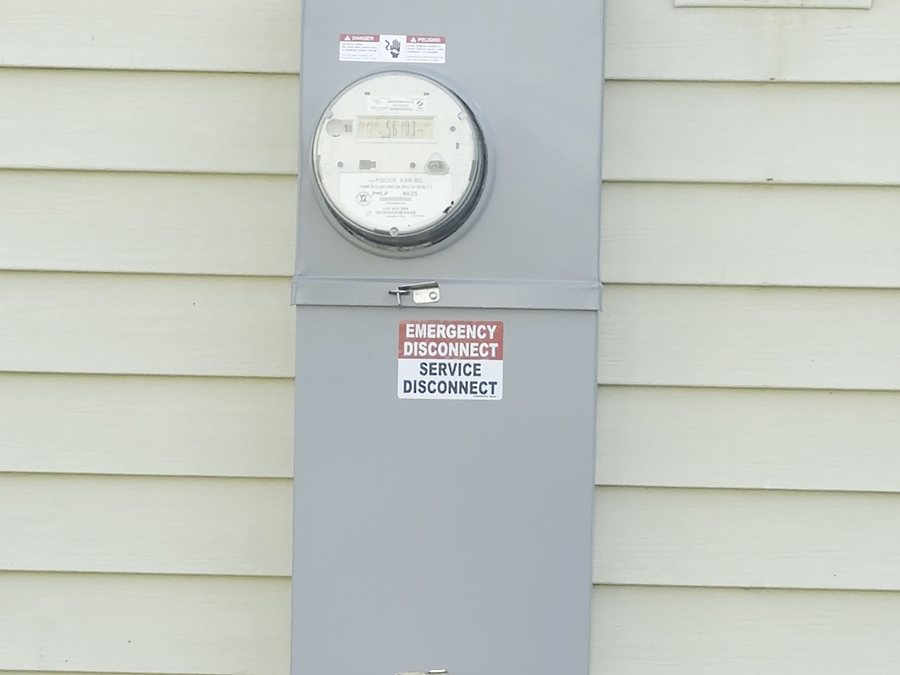
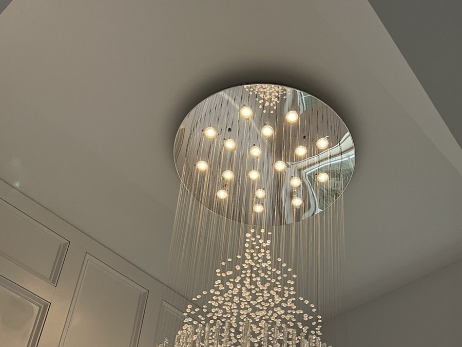
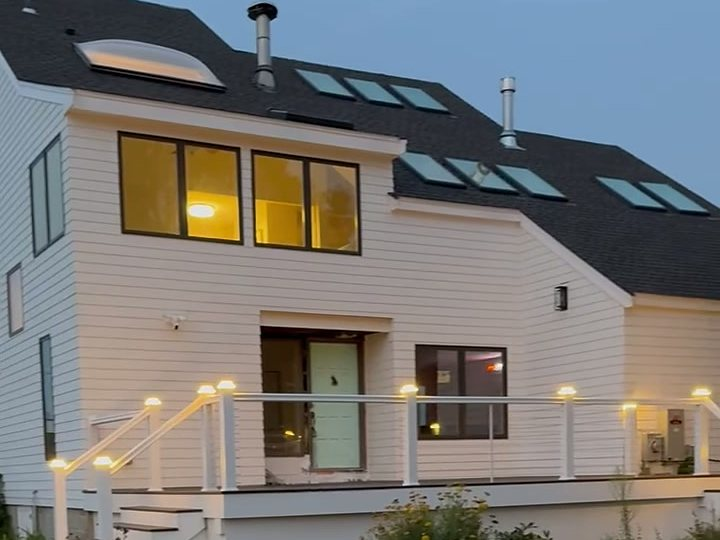
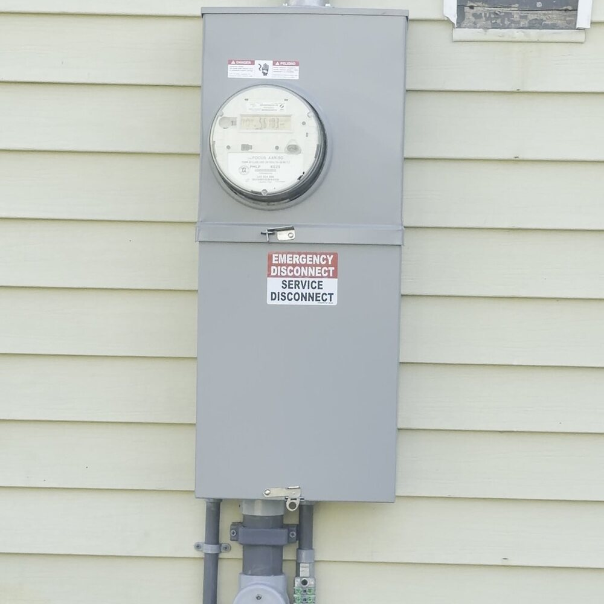

Most Requested

Panel & Service Upgrades
Many North Shore homes still run on a 100-amp panel that was never meant for today's electric loads. We upgrade your...
Learn more →Serving Salem, Massachusetts
Salem's historic housing stock often means older wiring and 100-amp panels. We modernize them safely, with the permit pulled and the work inspected. On time, permits always pulled and every estimate is free, residential and commercial.

What We Do in Salem
One licensed electrician for your whole home or business, repairs, upgrades and installs, all done to code.

Many North Shore homes still run on a 100-amp panel that was never meant for today's electric loads. We upgrade your...
Learn more →
Charge at home overnight and skip the public stations. We install Level 2 home EV chargers cleanly and to code, size...
Learn more →Your business can't afford downtime. We handle wiring, lighting, service upgrades and repairs for North Shore shops...
Learn more →
The right fixture changes a whole room. We hang chandeliers and pendants, swap dated ceiling lights and add dimmers...
Learn more →
Bright, even light without a single fixture hanging in the way. We plan and install recessed and can lights in...
Learn more →
New England nights start early in the fall. We install landscape and outdoor lighting that makes your home safer to...
Learn more →
Dead outlet? Breaker that keeps tripping? Flickering lights? We track down the real cause, fix it right the first...
Learn more →Real Jobs, Real Photos





Why Salem Homeowners Choose Julio
You talk to the same person for years, and the person who quotes the job is the one who stands behind the work in Salem.
We show up when we say we will. No no-shows, no all-day windows.
A clear written estimate up front. No surprises at the end.
Work in Salem is inspected and to code, your home stays safe, your insurance stays valid.
We tell you what's wrong, what we'll do and why, no jargon, no pressure.
Good to Know
Yes. Julio Bobato Electrician is fully licensed and insured in Massachusetts and serves Salem and the surrounding North Shore. We provide our license number up front.
Yes. We pull the required permits with the town of Salem so your work is inspected and to code, keeping your home safe and your insurance valid.
Yes. Every estimate is 100% free, in writing and with no obligation. The price we quote is the price you pay.
Based right in nearby Danvers, we can usually reach Salem quickly, and we offer emergency service when the power's out.
Nearby
Get a free, no-pressure estimate today. On-time service, upfront pricing and work you can trust.